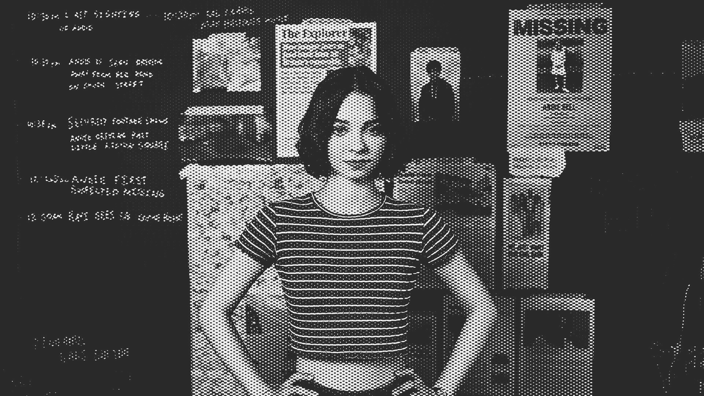

| Home | | Plot (season1) | | Plot (by the books) | | Characters and Cast | | Reviews |
|---|
LOCAL SCHOOL GIRL HAS A GOAL OF SOLVING A 5 YEAR OLD COLD CASE! 17 YEAR OLD PIPPA FITZ-AMOBI IS PERSISTENT ON SOLVING THE ANDIE BELL CASE

A GOOD GIRLS GUIDE TO MURDER (2024)
- No. of episodes: 6 (Season 2 has not been released yet)
- Genres: Mystery, Thriller, Horror, crime fiction, Drama
- Directed by: Dolly Wells; Tom Vaughan
A Netflix series based of the YA Novel with the same name, by New York Times Bestselling author, Holly Jackson. It follows our protagonist, Pip Fitz-Amobi, as she is unsure whether schoolgirl Andie Bell was killed by her lover Sal Singh five years ago; As she continues her investigation, disguised as a school project, she uncovers many dirty dark secrets in her town, little kilton.